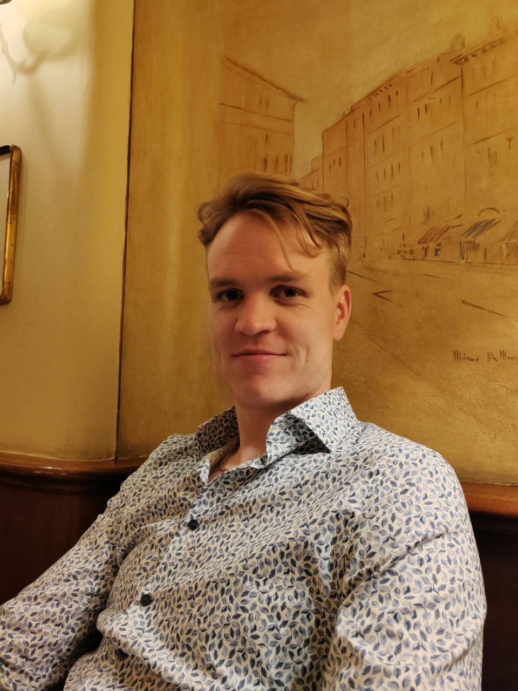

Maximilian "Mili" Rehn
From Milipedia, the free personal knowledge base
Maximilian Rehn
|
 MR'">
|
|
| Born / Base | Helsinki, Finland |
|---|
| Education | Aalto University
(M.Sc. Information Networks, 2021) |
|---|
| Military rank | Second Lieutenant
(Finnish Army Reserve) |
|---|
| Occupations | Builder · Writer · AI Researcher |
|---|
| Languages | Swedish, Finnish, English |
|---|
| Interests | Neuroscience, AI, crypto, longevity, BJJ, gym, yoga, human potential, racket sports, travel, books |
|---|
|
| Essays | Medium · Substack |
|---|
| Video | YouTube (@wizard_mili) |
|---|
| Social | X · Instagram |
|---|
| All Links | linktr.ee/maximilianrehn |
|---|
Maximilian "Mili" Rehn is a Finnish writer, builder, and researcher based in Helsinki, currently exploring ideas across artificial intelligence, consciousness, and human potential. He holds a Master of Science in Information Networks from Aalto University and serves as a Second Lieutenant in the Finnish Army Reserve.
Rehn shares his thinking through his Medium essays, Substack publication, and YouTube channel. His background bridges competitive gaming (Global Elite in CS:GO, Legend in Hearthstone, Master in StarCraft II), a dedicated decade of inner work and contemplative inquiry, and building software tools and AI agents.
His foundational personal philosophies center on Letting Go, Action Over Inaction, and Inner Work First, operating under the long-standing aim to Create More Buddhas Per Capita.
Core Principles
Rehn summarizes his operating heuristics into four core principles he keeps as daily reminders:
Principle 1
Keep the flow open and avoid getting caught in attachment or negativity. Beauty emerges naturally when resistance is released.
Principle 2
Face and Move Toward Fear
Lean into discomfort. What you resist often holds the clearest signal for breakthrough and personal expansion.
Principle 3
Done beautifully. Fight entropy: today instead of tomorrow, speed compounds, and luck is a function of surface area.
Principle 4
Curiosity Instead of Critique
Replace judgment with active inquiry. Seek to understand underlying dynamics before forming conclusions.
Philosophies & Frameworks
Selected essays and synthesized philosophical frameworks from Milipedia:
Michael Singer-style non-attachment; beauty as emergent from releasing resistance rather than steering.
Fighting entropy; velocity compounds, and surface area generates luck and serendipity.
The foundational decision at age 20: self-mastery precedes attempting to reorganize the world.
The Velcro vs. Teflon mind; why inner training is hard and five personal tools for cognitive sovereignty.
Through-line since 2018: Harari, Zarathustra, Jung, Krishnamurti, predictive processing, and de Mello.
Life as an open game whose win condition is presence and the perception of beauty.
The anti-algorithm stance; distinguishing active creation from passive algorithmic consumption.
Critique of information-only schooling; proposal for mental and spiritual hygiene curricula.
Decisions priced in energy: why avoiding status games and conformity protects vitality.
Hanzi Freinacht's "Listening Society" and integral theory: developmental-stage growth and politics.
Balaji Srinivasan's concept and the practical throughline behind pop-up cities and experimental governance.
Other Interests
Beyond writing and philosophy, Rehn actively explores a diverse matrix of somatic practices, emerging technologies, and continuous learning:
🧠 Neuroscience
⚡ Crypto
🏋️ Gym
🤖 AI
🧬 Longevity
🧘 Yoga
✨ Human Potential
🎾 Racket Sports
🥋 BJJ
✈️ Travel
📚 Reading lots and lots of books
Rehn produces written essays, vlogs, podcasts, and video reflections across several platforms:
- Medium Publication: 100+ essays exploring mental models, philosophy of beauty, books, and deliberate living.
- Substack Newsletter: Long-form essays, including reflections on pop-up cities and tech hubs.
- YouTube (@wizard_mili): Reflections on attention, AI, and inner development, alongside podcast conversations.
External Links
Letting Go
Core Philosophy
From Milipedia, the free personal knowledge base of Maximilian Rehn
Summary: Mili's core life philosophy inspired by Michael Singer: releasing internal resistance so that thought and emotion flow freely, allowing beauty to emerge naturally.
Letting Go represents Maximilian Rehn's primary and foundational life philosophy: a stance of non-attachment derived from the work of Michael Singer (The Untethered Soul, The Surrender Experiment). The practice centers on "being that flow of ideas and emotions that becomes beautiful when we are not too attached to things."
Relationship to the Philosophy of Beauty
This framework reframes and deepens Rehn's earlier Philosophy of Beauty. While the beauty philosophy treated beauty as an active compass to steer by, the letting-go framework treats beauty as emergent: it is what experience naturally resolves into once internal grasping and resistance are released. The active effort shifts from constantly striving toward beauty to dropping the tension that obstructs it.
It forms the first of his four operational principles: letting go, keeping the flow open, and refusing to get caught in negativity.
Intellectual Lineage
The primary named source is Michael A. Singer, alongside contemplative influences including Jiddu Krishnamurti, Anthony de Mello, and David R. Hawkins. The through-line in Rehn's writing dates back to a May 2022 essay examining the "seat of consciousness"—the practice of remaining anchored as the witness of internal states rather than closing the heart against uncomfortable moments.
It also synthesizes insights from Eastern non-dual traditions: treating thoughts and feelings as transient energetic events rather than permanent definitions of the self, and cultivating a steady center amid chaotic external conditions.
Practical Application
In daily practice, Rehn articulates the technique not as a passive surrender, but as active micro-releases throughout the day:
- Micro-surrenders: Recognizing that letting go is rarely one monumental breakthrough; it consists of dozens of small releases of tightness in ordinary moments.
- The Center of the Storm: Viewing energy, emotions, and thoughts as a river in constant motion, while maintaining a centered vantage point that allows them to pass without interference.
- Intermittent Awareness: Treating the state not as an impossible standard of constant perfection, but as an ongoing baseline to return to whenever tension is noticed.
See Also
Action Over Inaction
Operating Principle
From Milipedia, the free personal knowledge base of Maximilian Rehn
Summary: Action done beautifully. Fighting entropy, recognizing that motivation follows action, and expanding luck by increasing surface area.
Action Over Inaction is one of Rehn's core operating principles: when faced with uncertainty, prioritize action over passive deliberation, and execute it with aesthetic care. The principle rests on three interlocking premises: fighting entropy, the compounding power of velocity, and luck as a mathematical function of experiential surface area.
The Entropy Premise
Drawing on thermodynamics and information theory, inaction is framed as a default descent into disorder and stagnation. Living systems must continuously expend deliberate energy to stave off decay. Taking immediate, focused action is the primary counterweight against mental inertia and systemic entropy.
The 'Do Something' Principle & Motivation
In his 2020 essay series, Rehn analyzed the psychological mechanics of starting. Drawing on Mark Manson, he emphasizes that motivation does not precede action; motivation follows action. Starting—even with an imperfect draft, a small prototype, or a simple physical movement—generates the emotional resonance and clarity required to continue.
This is paired with an active strategy regarding embarrassment: fear of looking awkward or failing in public is a cheap tax that keeps most people paralyzed. Spending down that fear through low-stakes public building and open exploration yields outsized experiential returns.
Surface Area Generates Luck
Influenced by Nassim Taleb's concepts of optionality and antifragility, Rehn formulates luck as a function of surface area. Inaction yields zero surface area, whereas publishing essays, shipping software prototypes, attending conferences, and initiating conversations create asymmetric upside where unforeseen positive serendipity can occur.
The Counterweight: Festina Lente
Rehn balances pure execution speed with the classical Roman adage Festina Lente ("make haste slowly"):
"Urgency because life is short and no day should be wasted; slowness because otherwise the depth of the journey is missed."
The goal is not frantic busywork, but deliberate velocity paired with deep presence.
Key Decision Algorithms
- Now over Later: Address resistance immediately before friction accumulates.
- Direction over Destination: Decouple satisfaction from far-off goals so that every forward movement feels intrinsically rewarding.
- Action with Beauty: Execute with craft, proportion, and attention to detail.
Inner Work First
Foundational Philosophy
From Milipedia, the free personal knowledge base of Maximilian Rehn
Summary: The foundational decision made at age 20: internal clarity must precede external ambition, because one's internal state colors every endeavor.
Inner Work First is the foundational premise of Rehn's adult life: the deliberate choice to cultivate self-awareness, emotional sovereignty, and mental clarity before attempting to reorganize society or pursue high-stakes external conquests.
The Origin and Inversion
During a solo Interrail journey across Europe at age 20, Rehn initially filled notebooks with lists of societal flaws and ambitious systemic reforms. Mid-journey, influenced by Jiddu Krishnamurti's dialogues on the conditioning of thought, he recognized an inversion: fixing outer systems while operating from internal confusion and unexamined ego invariably replicates the very problems one seeks to solve.
He formulated this using an optimization metaphor: "The best build and combination for set pieces early in life is to optimize the internal state first."
The Diagnostic: The World as a Reflection of Inner Chaos
In published essays including "Don't change the world before you understand yourself" and "The Greatest Problem Facing Humanity," Rehn argues that external crises in politics, economics, and culture are symptoms of unprocessed human psychology:
- Unconscious Action: Unaware actors with noble intentions often cause collateral damage, bending external environments to soothe unexamined personal anxieties.
- Institutional Decay: When human consciousness remains reactive, political systems devolve into status games, economic structures into narrow greed, and philosophical movements into dogma.
- Durability of Internal Skills: While technical stacks, economic paradigms, and career markets fluctuate rapidly, metacognitive mastery, emotional stability, and self-honesty remain permanently applicable across all conditions.
Core Practices
Rehn's execution of this philosophy emphasizes:
- Dedicated Contemplative Practice: Daily meditation (Transcendental Meditation and mindfulness) to observe the mechanics of thought without immediate identification.
- Intellectual Grounding: Reading primary philosophical and psychological texts before leaping to intuitive conclusions.
- Physical Foundations: Treating somatic health (sleep, nutrition, Brazilian Jiu-Jitsu, yoga) as the non-negotiable physical substrate for cognitive clarity.
Create More Buddhas Per Capita
Vision & Metacognition
From Milipedia, the free personal knowledge base of Maximilian Rehn
Summary: A core public tenet and long-standing bio: cultivating minds that experience thoughts without sticking, building the mental immunity required for a free society.
"Create More Buddhas Per Capita" has served as Rehn's public bio and defining aspirational phrase for over five years. It synthesizes his contemplative inquiry and political philosophy into a single objective: upgrading the average level of conscious awareness and psychological resilience across individuals in society.
The Velcro and Teflon Mind Metaphor
In an essay articulating the thesis, Rehn contrasts two cognitive operating modes:
- The Velcro Mind: For an untrained mind, every passing negative stimulus, provocative headline, or emotional impulse sticks immediately. It entangles with adjacent memories and insecurities, compounding into prolonged rumination, anxiety, or resentment.
- The Teflon Mind: For a trained mind, emotions and thoughts arise, deliver their immediate physiological signal (often lasting only 60 to 90 seconds biochemically), and slip away without leaving psychological residue. The mind does not build an elaborate narrative around the sensation.
The Modern Environmental Challenge
Rehn observes that while historical contemplative traditions developed within monasteries, forests, and supportive communal cloisters, modern individuals must cultivate cognitive sovereignty inside an environment engineered for the opposite:
- Attention Extraction: Algorithmic feeds optimized for outrage, status comparison, and emotional contagion.
- Manufactured Desire: Economic structures that leverage feelings of inadequacy to drive consumer behavior.
- Cognitive Fragmentation: Digital hyper-connectivity disrupting continuous contemplation and deep reflection.
Five Personal Tools for Mind Training
Rehn outlines five practical instruments for cultivating psychological freedom:
- Metacognition: Stepping into the observer vantage point to watch mental chatter without mistaking thoughts for objective facts.
- Meditation: Anchoring attention on the breath or mantra to build attentional stability.
- Cosmic Perspective: Zooming out to astronomical scales to contextualize transient daily frictions.
- Constructive Action: Actively pivoting energy toward life-affirming creative projects rather than brooding.
- Compassionate Self-Correction: Acknowledging human evolutionary wiring with patience while steadily upgrading daily habits.
The Civilizational Argument
In "A society asleep is a ticking time bomb," Rehn argues that widespread self-knowledge is an indispensable civilizational safeguard. A population lacking metacognitive sovereignty is inherently vulnerable to mass panic, demagoguery, and ideological contagion. Genuine democratic freedom depends on citizens who possess internal clarity and can trust their own critical perception.
Mind Constructs Reality
Epistemology
From Milipedia, the free personal knowledge base of Maximilian Rehn
Summary: A multi-year synthesis of neuroscience, cognitive science, and philosophy: subjective reality is generated by internal generative models that can be examined and reprogrammed.
Mind Constructs Reality is a persistent through-line across Rehn's writing and research: human experience is not a passive recording of objective external events, but an active, top-down construction generated by the brain's internal models, cultural conditioning, and perceptual filters.
Key Frameworks in the Synthesis
| Framework / Source | Core Insight Adopted |
|---|
Predictive Processing
(Cognitive Science) | The brain is a predictive engine. Perception is a generative top-down best guess, with sensory inputs functioning primarily as error-correction signals. |
Anthony de Mello
(Awareness) | Beliefs and rigid labels harden perception, preventing direct moment-to-moment appreciation of reality. |
Sam Harris
(Neuroscience / Waking Up) | The feeling of a rigid, separate 'self' behind the eyes is an illusion; conscious awareness is simply the space in which experience occurs. |
| Jiddu Krishnamurti | The conditioned intellect operates within verbal boundaries; direct insight occurs when internal chatter subsides. |
Hanzi Freinacht / Ken Wilber
(Integral Theory) | Human cognitive and emotional capacities mature through distinct developmental stages, expanding perceptual bandwidth. |
Instrumental Belief: Frames as Tools
In his essay "A New Way to Think," Rehn proposes an instrumental approach to worldviews: human minds are not bound to cling dogmatically to a single rigid model. Just as physics utilizes both wave and particle models depending on the problem, individuals can adopt specific mental frameworks based on their utility and life-affirming outcomes.
For example, one might recognize determinism at a physical level while deliberately cultivating strong personal agency to ensure vigorous, ethical action in daily life.
The Constructive Takeaway
If subjective reality is constructed from within, upgrading internal interpretations, emotional hygiene, and attentional habits is the highest-leverage intervention available for human well-being and creative output.
Life Philosophy of Beauty
Teleology & Aesthetics
From Milipedia, the free personal knowledge base of Maximilian Rehn
Summary: Life as an open-ended game where the win condition is present-moment awareness and the perception of beauty, especially as AI graduates humanity from mechanical achievement.
The Life Philosophy of Beauty is Rehn's 2026 written treatise on existential purpose and human teleology. It posits that life is an open game whose win condition is self-authored, and that presence and the appreciation of beauty represent the highest expressions of conscious existence.
Graduating from the Achievement Game
Rehn analyzes the historical win conditions of human society—primarily external achievement, wealth accumulation, and mechanical productivity. As artificial intelligence and automation progressively outperform human capabilities in analytical and productive tasks, the traditional justification for human worth based solely on external output dissolves.
"We are not rejecting the achievement game. We are being graduated from it."
What remains after this graduation is internal reality: the capacity for conscious presence, direct subjective experience, and aesthetic resonance.
Inner Freedom as the Prerequisite
In "Wednesday Morning Life Philosophy," Rehn establishes that beauty cannot serve as a compass for an unfree mind. Freedom entails liberation from compulsive mental busywork, fear-driven striving, and reactive conditioning. True leisure in an unfree mind produces anxiety; in a free mind, it yields creative expression, philosophical depth, and communion.
Beauty as a Practical Decision Instrument
Rather than treating beauty as an abstract art theory, Rehn applies it as a daily operational heuristic across practical domains:
- In Communication: Finding the organic rhythm of conversation, where each person takes up exact space without competition.
- In Physical Practice: Pursuing flow, long exchanges, and graceful movement over rigid point-scoring.
- In Daily Decisions: Asking: "What would be the most beautiful, elegant course of action here?"
This formulation echoes Friedrich Schiller's concept of the play drive (Spieltrieb): the synthesis of necessity and freedom, where one acts out of genuine joy and artistic integrity.
Get Off the Feed
Attention & Culture
From Milipedia, the free personal knowledge base of Maximilian Rehn
Summary: The argument against passive algorithmic scrolling, protecting cognitive sovereignty, and embracing the producer-over-consumer mindset.
Get Off the Feed is Rehn's most frequent public commentary on technology: algorithmic recommendation feeds (X, TikTok, Instagram Reels, YouTube Shorts) are fundamentally extractive to human agency, deep focus, and original thinking.
The Passivity Problem
First articulated in his 2020 essay "Skip the feed," Rehn pinpoints the structural defect of modern feeds: their complete passivity. When an algorithm chooses what you see next based on engagement metrics (which disproportionately reward outrage, novelty, and sensationalism), attention is fragmented and the mind is placed into a reactive, low-energy state.
In contrast, deliberate information acquisition—reading a complete book, searching specifically for a technical solution, or engaging in deep dialogue—builds durable neural connections and genuine insight.
The Producer vs. Consumer Distinction
Rehn addresses the apparent paradox of maintaining an active presence on social platforms while advocating against feed consumption:
"Just because I am posting does not mean I am on social media."
He delineates a sharp boundary between creating (treating platforms as distribution nodes for writing, educational vlogs, and philosophical inquiries) and consuming (passively scrolling algorithmic timelines). Protecting cognitive energy requires eliminating mindless consumption while maintaining high-leverage creative output.
Constructive Alternatives
- Intentional Information Diet: Curating high-signal long-form essays, books, and trusted research over realtime hot-takes.
- Environment Engineering: Utilizing system-level site blockers and hosts-file focus tools to eliminate reflexive browsing during deep work.
- User-Governed Feeds: Advocating for open algorithms where individuals can customize recommendation weights (e.g., dial up philosophy and technical research, dial down commentary).
Education Should Teach the Inner Life
Institutions & Learning
From Milipedia, the free personal knowledge base of Maximilian Rehn
Summary: A sustained critique of modern education for teaching excessive static data while ignoring self-understanding, emotional regulation, and attention training.
Education Should Teach the Inner Life is a recurring theme across Rehn's writing from 2020 through 2026: formal educational institutions demand over a decade of youth attention teaching static facts, while completely omitting the most critical lifelong skill—how to understand, regulate, and direct one's own mind.
The Central Critique
In "Thought should be a subject in school," Rehn argues that in an era of ubiquitous search engines and generative AI, accumulating rote knowledge is an antiquated metric of intelligence. Presenting students with endless information without teaching mental hygiene creates educated individuals who remain helpless in the face of anxiety, compulsive habits, and existential aimlessness.
Proposed Curriculum: Mental and Spiritual Hygiene
In "Spiritual Health as a Subject in School," he outlines core domains that should be taught with increasing depth from primary education through university:
- Observation of Thought: Training students to observe their mental patterns without immediate emotional entanglement.
- Constructive Boredom: Protecting unstructured downtime, allowing children to discover their authentic intrinsic curiosities rather than filling every void with stimuli.
- Attention Training: Cultivating sustained concentration, sensory awareness, and cognitive endurance.
- Direction-Oriented Living: Shifting from purely goal-oriented education (which creates constant inadequacy punctuated by brief accomplishment spikes) to direction-oriented living, where daily curiosity and mastery are intrinsically rewarding.
The AI-Era Justification
In his 2026 lectures and essays, Rehn notes that AI models are rapidly mastering technical problem-solving and encyclopedic recall. As machine intelligence handles data synthesis, the enduring human value of universities and academies will inevitably shift from information transmission to the cultivation of character, wisdom, and self-mastery.
Personal Energy as the Master Resource
Life Design
From Milipedia, the free personal knowledge base of Maximilian Rehn
Summary: Evaluating life decisions by their net impact on physical and mental vitality, pricing conformity and social status games in the currency of energy.
Personal Energy as the Master Resource is Rehn's primary analytical frame for life design and decision-making: every project, relationship, habit, and social commitment is priced by its net impact on personal energy and vitality.
Energy as the Universal Currency
In his essay "On personal energy," Rehn argues that time management is secondary to energy management. Having eight hours of fatigued, unfocused time produces trivial creative output, whereas two hours of peak mental energy can yield breakthrough ideas and high-leverage execution.
Applications of the Energy Frame
- The True Cost of Conformity: Pursuing socially prescribed paths solely to meet external expectations bleeds energy continuously through low-grade chronic tension. Authentic self-chosen paths may carry high upfront uncertainty, but generate long-term energy and enthusiasm.
- Status Games as Energy Traps: Competing in zero-sum social prestige games forces the brain into a defensive, hyper-vigilant posture. Discovery mode—driven by genuine curiosity—creates renewable energy and unlocks creativity.
- Radical Honesty: Living incongruently requires immense cognitive bandwidth to maintain facades. Absolute alignment between inner values, speech, and action eliminates friction and conserves vitality.
- Awareness as Renewable Fuel: Cultivating curious attention in ordinary moments turns daily experience into a continuous source of learning rather than an exhausting chore.
The Physical Foundation
Rehn underscores that mental energy cannot be divorced from biological inputs. Optimizing sleep quality, nutrition, physical training (BJJ, mobility), and environmental light exposure are the non-negotiable physical substrates upon which intellectual clarity depends.
Metamodernism
Political & Cultural Philosophy
From Milipedia, the free personal knowledge base of Maximilian Rehn
Summary: Synthesizing modernist sincerity and postmodern critique: supporting psychological maturation as a primary goal of culture and governance.
Metamodernism is a cultural and political philosophy studied extensively by Rehn, rooted in Hanzi Freinacht's The Listening Society and Ken Wilber's Integral Theory. It seeks to transcend both naive modernist optimism and cynical postmodern deconstruction by embracing an integrative, developmental view of human civilization.
The Metamodern Synthesis
Metamodernism oscillates between and unites two historical attitudes:
- Modernism: Faith in progress, grand narratives, technological potential, and sincere aspiration.
- Postmodernism: Critical skepticism, awareness of power structures, irony, and deconstruction of dogmas.
- Metamodernism: Informed naivety — recognizing the complexities and limitations highlighted by postmodernism while choosing to act with earnestness, courage, and constructive vision.
The Listening Society
In a six-part essay series on his blog, Rehn explored the core concepts of metamodern governance:
- The 'Dividual' Self: The recognition that individuals are not isolated islands, but open, transpersonal nodes shaped by culture, language, and shared environments.
- Developmental Stages: Human beings progress through distinct stages of psychological complexity, cognitive bandwidth, and emotional maturity. Effective societal structures must meet people where they are and nurture their upward development.
- The Welfare State to the Listening Society: While the traditional welfare state focuses on material redistribution and basic safety nets, a modern civilization must prioritize psychological development, mental health, and human flourishing as fundamental public concerns.
The Golden Spiral as Visual Metaphor
Rehn frequently references the golden spiral as a symbol of metamodern development: elegant, adaptive complexity emerging organically from simple, recursive principles rather than top-down authoritarian control.
Network State & Pop-Up Cities
Governance & Future of Living
From Milipedia, the free personal knowledge base of Maximilian Rehn
Summary: Balaji Srinivasan's concept of cloud-first communities founding physical enclaves, and Rehn's real-world explorations across global pop-up cities.
The Network State is Balaji Srinivasan's framework for digital-native governance: highly aligned online communities that organize around shared moral visions and economic density, establish physical enclaves, and eventually achieve diplomatic recognition as sovereign entities.
Pop-Up Cities as Institutional Laboratories
Rather than treating the network state as pure theory, Rehn explored the movement on the ground across multiple pop-up cities (temporary dense residencies that gather founders, researchers, and creators), including Zuzalu, Edge Esmeralda, and Balaji's Network School.
In his essay "Reflections on Pop-up Cities," Rehn synthesizes the core learnings from living within these experimental communities:
- Maximizing Serendipity: Concentrating high-agency individuals in walkable, shared living spaces accelerates collaboration, creative prototypes, and deep friendships far beyond remote digital interaction.
- Culture and the Built Environment: The spatial design of shared kitchens, co-working lounges, and daily wellness rituals directly shapes communal warmth and productive output.
- Substance over 'Larping': The vital distinction between communities that produce real software, research, and governance models versus those trapped in circular meta-debates without tangible execution.
- Integrating Health with Technology: The most sustainable and vibrant tech enclaves intentionally integrate physical health, meditation, and outdoor movement alongside intense engineering sprints.
Core Reading List on Parallel Institutions
- The Network State — Balaji Srinivasan
- The Sovereign Individual — James Dale Davidson & Lord William Rees-Mogg
- The Beginning of Infinity — David Deutsch
- From Third World to First — Lee Kuan Yew
- The Bitcoin Standard — Saifedean Ammous